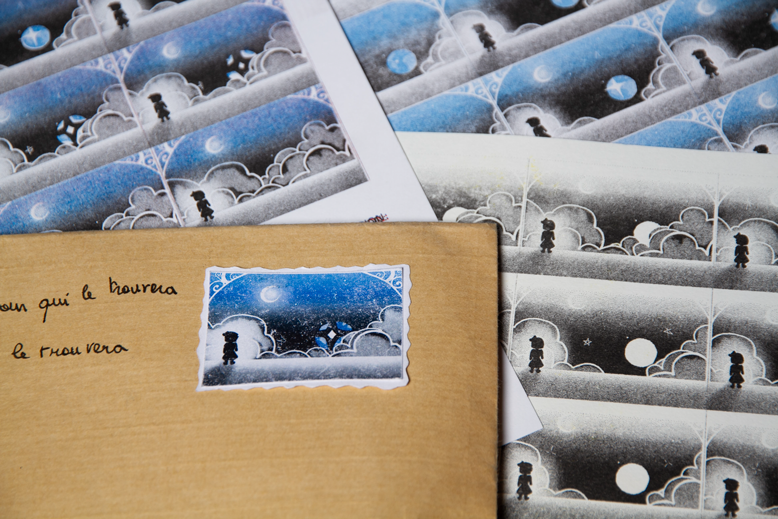
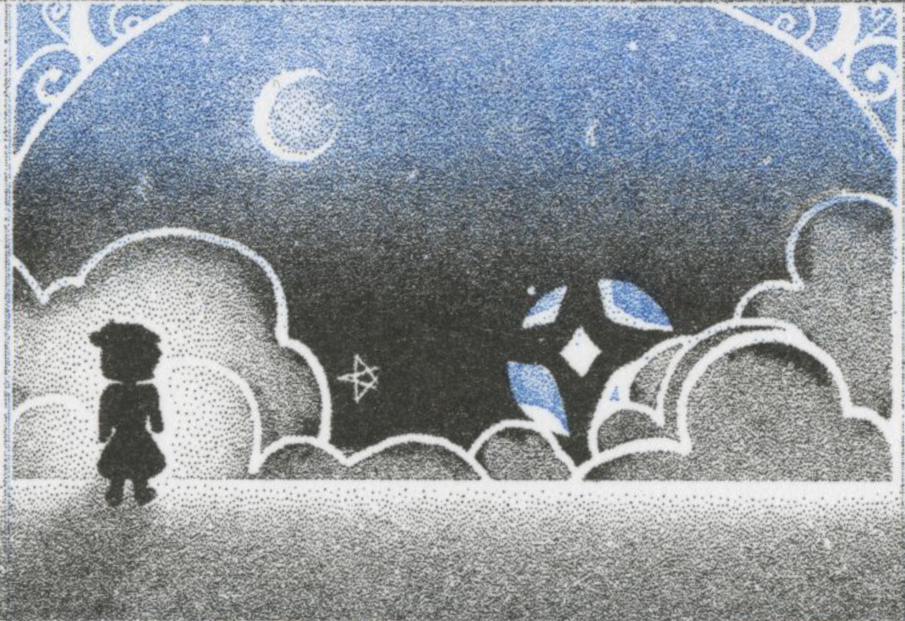
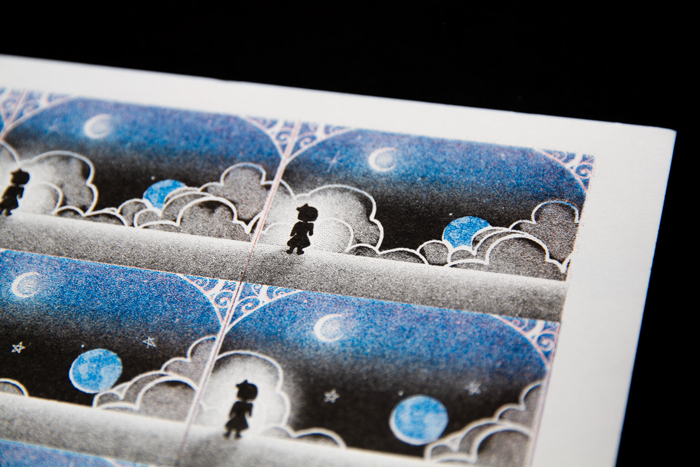
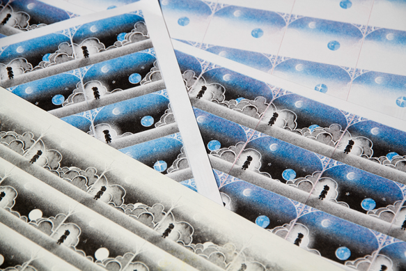
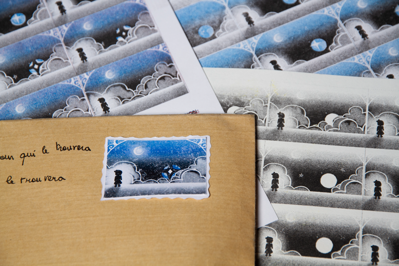
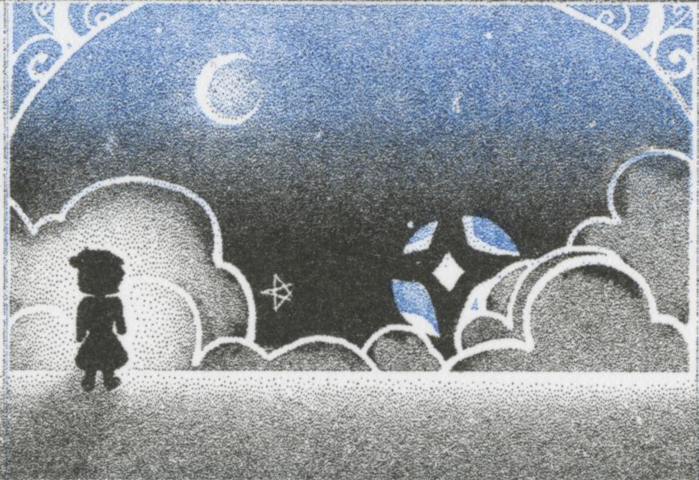
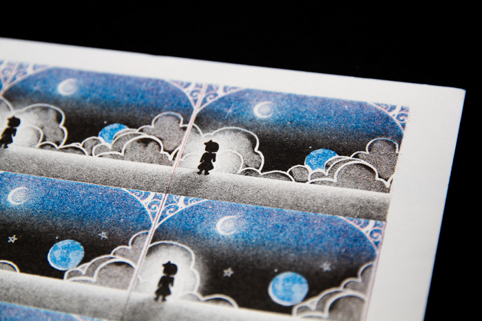
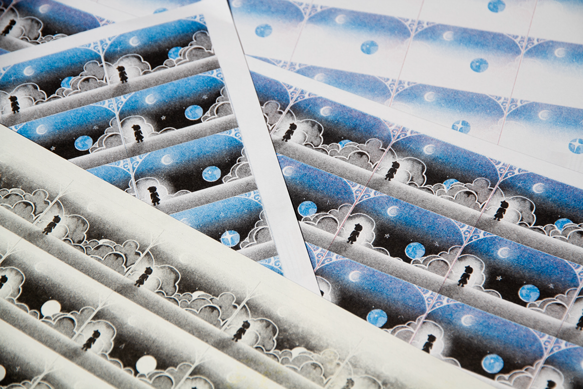

projet d'animation de 4 secondes (48 images) au format timbre et imprimé en risographie.
entre science fiction et soupçon de réalité, ce timbre représente comment j’envisage 2030.
il présente un enfant, posté derrière la fenêtre de sa demeure dans l’espace, regarde sans émotions la terre exploser.
à travers ce projet, je pose la question de la pérennité de la planète mais aussi le problème d’habitat dans l’espace, qui est encore à ce jour une problématique en vigueur.
scroll à l'horizontal →

 






